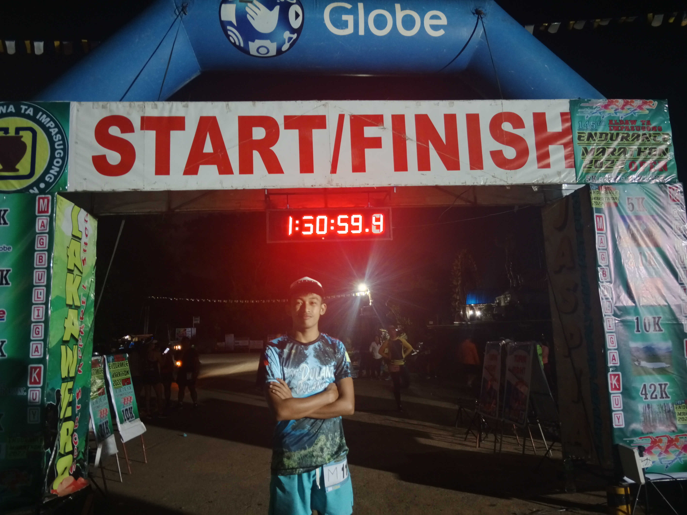
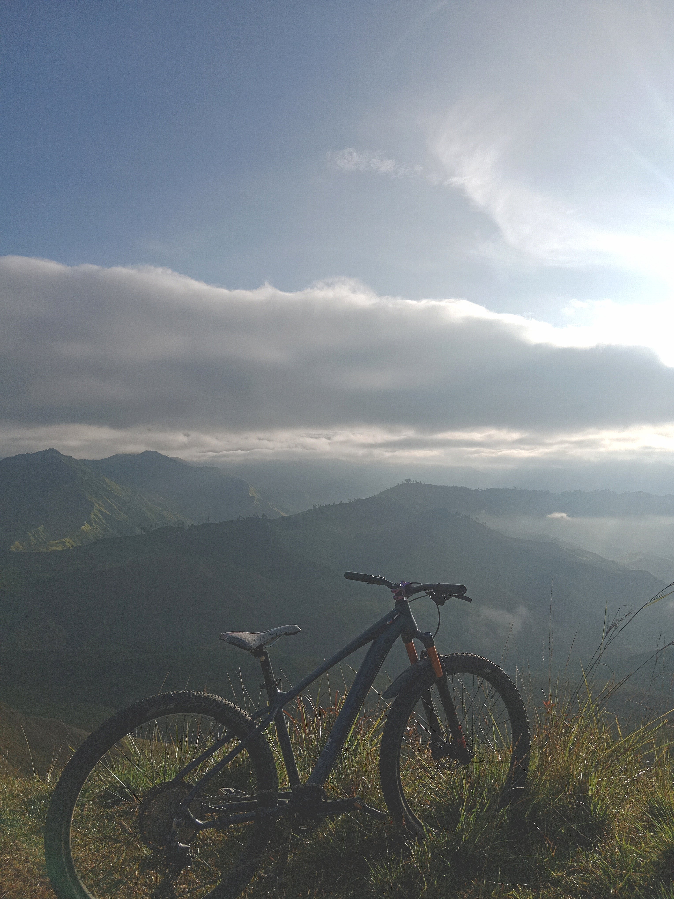
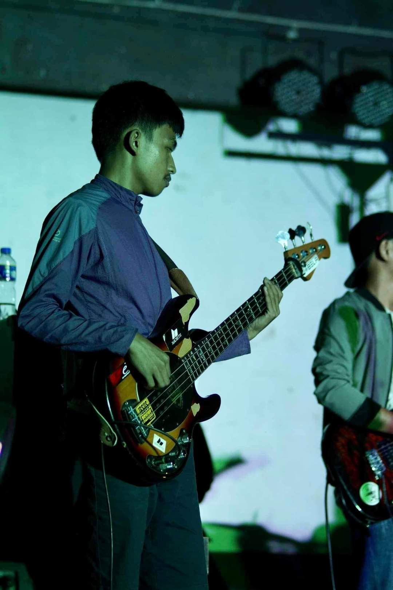

This was my first marathon, and I finished in 8th place. Despite my lack of training and workouts, I still managed to get into the top 10. Also, on my next run, I consistently finished in the top 10, my previous finish was top 6, top 4, and on my most recent run, I finished in the top 2.

This is the most expensive thing I bought with my own money—an Enduro mountain bike. I save that money by working as a tour guide, DJ, and sound tech.

I'm also a bassist for our band, Timbertone Band, and not just that, I also know to play drums, keyboards, etc.